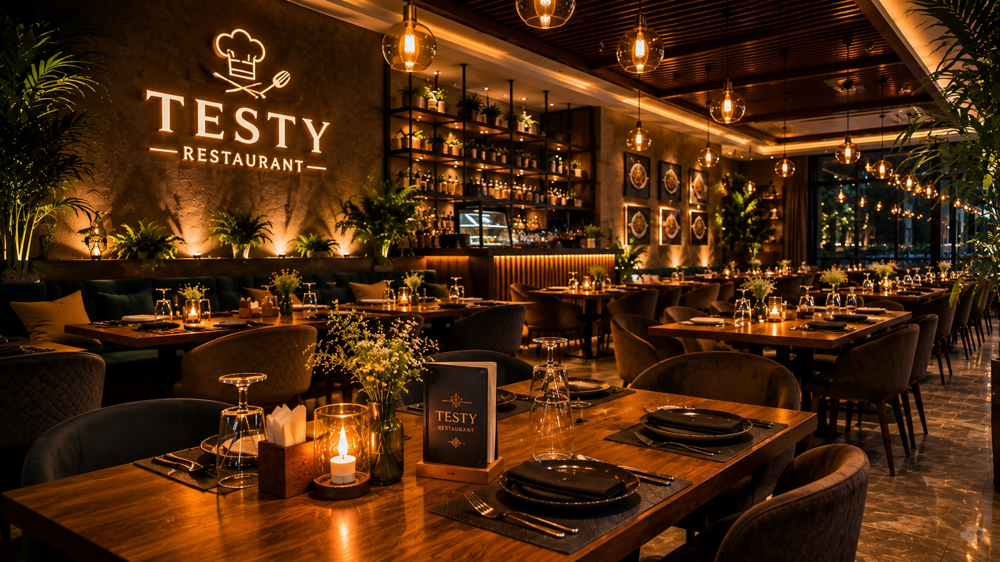
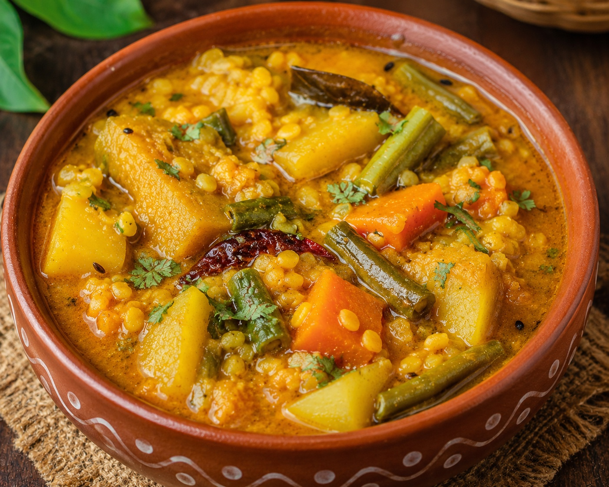
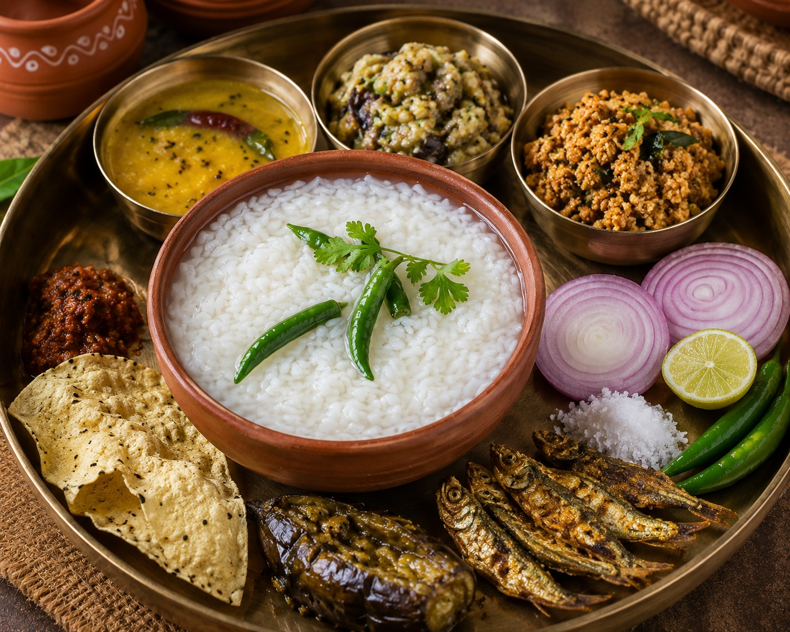
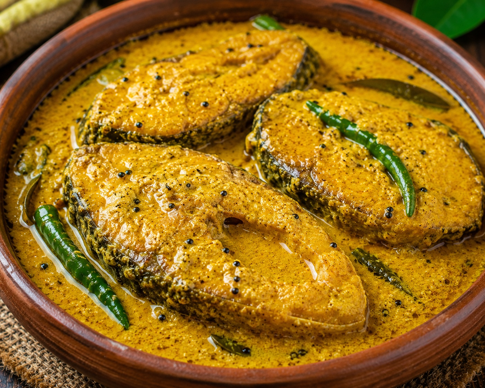
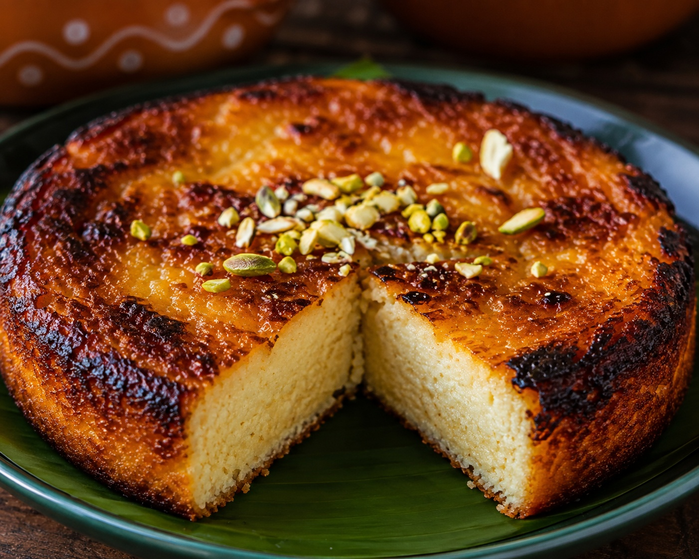

AUTHENTIC TASTE OF ODISHA
Traditional Odia Food
in Bhubaneswar
Experience the authentic flavors of Odisha, prepared with traditional recipes, fresh ingredients, and lots of love.

WELCOME TO ODISHA RASOI
The Taste of Odisha, Served With Love
Odisha Rasoi brings the traditional flavors of Odisha to the heart of Bhubaneswar. Our dishes are inspired by generations of Odia cooking traditions.
From comforting Dalma and refreshing Pakhala to delicious Machha Besara and Chhena Poda, every dish is prepared with authentic ingredients and traditional techniques.
Discover Our Story →OUR CUSTOMER FAVORITES
Popular Dishes
A taste of the dishes our guests love most



WHY ODISHA RASOI
Why Choose Us?
More than food — it's an experienceAuthentic Recipes
Traditional Odia recipes passed down through generations.
Fresh Ingredients
We use fresh and carefully selected ingredients every day.
Expert Chefs
Experienced chefs who understand the true taste of Odia cuisine.
Made With Love
Every plate is prepared with care, passion, and attention to detail.